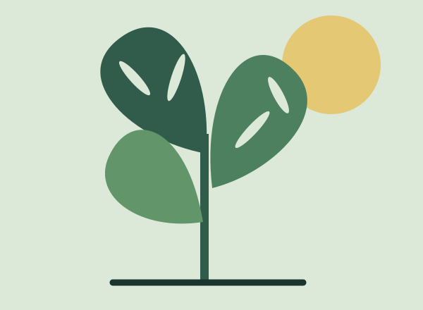
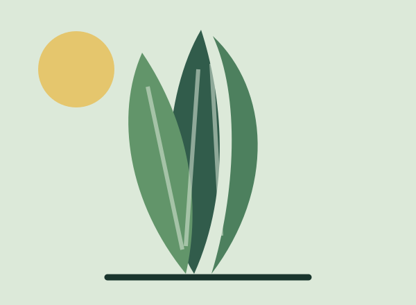
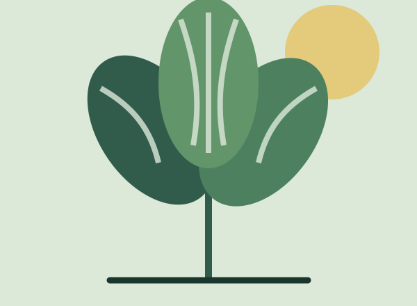
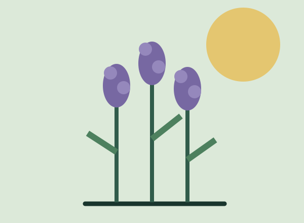
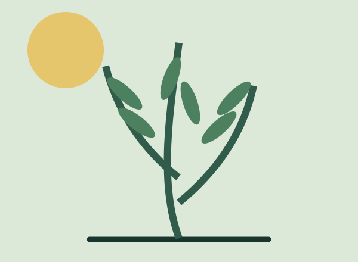
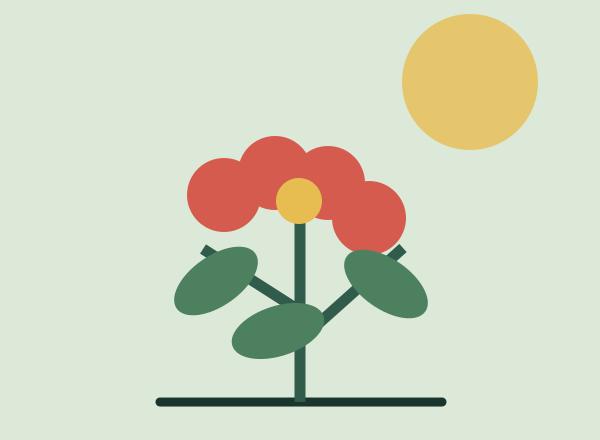

Monstera deliciosa
Costilla de Adán
Hojas escultóricas y una presencia tropical para rincones luminosos.
Descargar ficha PDF ↗Guía botánica doméstica
Explorá una selección de plantas resistentes y elegí la compañera ideal para tu casa, balcón o jardín.
Explorar plantasColección seleccionada
Luz amable · espacios interiores

Monstera deliciosa
Hojas escultóricas y una presencia tropical para rincones luminosos.
Descargar ficha PDF ↗
Dracaena trifasciata
Una aliada noble, vertical y tolerante para ambientes con poca luz.
Descargar ficha PDF ↗
Calathea orbifolia
Rayas suaves y movimiento: una planta para observar de cerca.
Descargar ficha PDF ↗Sol abierto · patios y balcones

Lavandula angustifolia
Aromática, resistente y perfecta para sumar perfume al jardín.
Descargar ficha PDF ↗
Salvia rosmarinus
Un clásico culinario que disfruta del sol y de un suelo bien drenado.
Descargar ficha PDF ↗
Pelargonium hortorum
Flores intensas y color duradero para ventanas y espacios exteriores.
Descargar ficha PDF ↗Detrás del herbario
Verde Cerca es mantenido por Nahuel Buzzi, estudiante de informática, como una guía simple para aprender, cuidar y disfrutar más de las plantas que nos rodean.
¿Tenés una consulta?
Completá el formulario y dejá tu mensaje. Este formulario está preparado para enviar una consulta por correo.